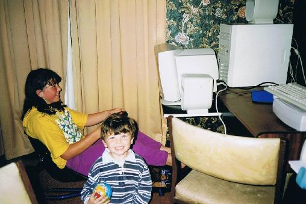
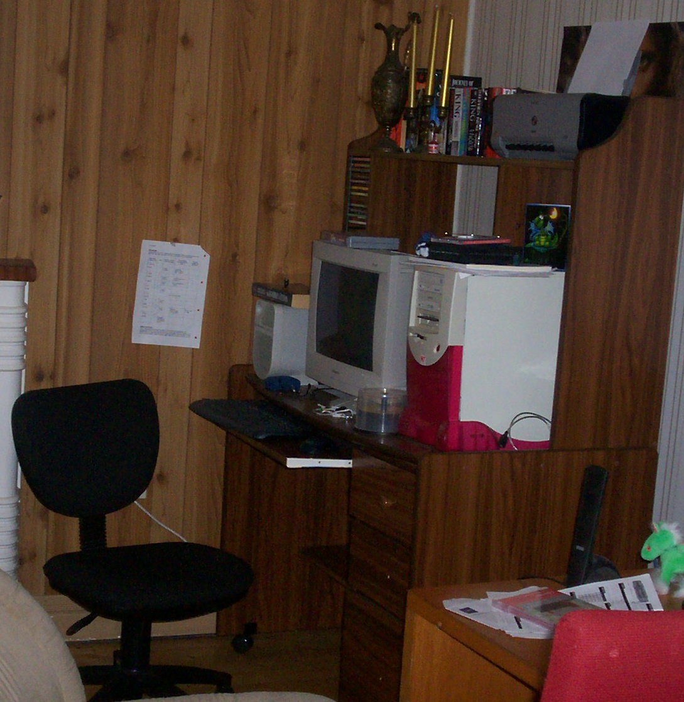

About Me
This section looks a little into my history.
One of the earliest things I remeber doing was sitting at the Commodore 64 for hours typing in commands to change the colours of the the font and two background colours. As well as loading in my cassette tapes of lemonade stand and space invaders, which each took about 10 minutes to load!
As well as the Commodore we also had an Atari where we played games such as pitfall, grand prix and barn storming.

Always interesed in technology and how things worked, I would also spend hours playing with an electronic typewritter.

Growing up we always had a computer in the house. Dad and I would often spend hours playing various adventure or puzzle games like Monkey Island, Maniac Mansion, Myst or our favorite Zak McKracken and the Alien Mind Benders.
We would often play LAN games as well with my two little brothers Shane and Jack.
Later as technology advanced, our new favorite games were racing games that we would play using a racing simulator. The most common one we would play would be TOCA, the F1 games we liked as well but were a lot more difficult. This was also around the time my dad and I would race go-karts.
It wasn't until I was a teenager when I received my first computer in a bright pink case. I would spend hours optimising it, receiving upgrades and playing games such as my favorite Baulders Gate. This computer then followed my to Univeristy, where I had to carry the 17in CRT monitor up and down stairs as I frequeted LAN parties on campus. As well as from share house to share house.
